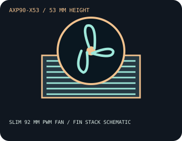

[ INDIVIDUAL COMPONENT // COOLING ]
Thermalright AXP90-X53
A 53 mm top-flow cooler with four heatpipes and a slim 92 mm PWM fan; thermal capacity should be checked against the actual CPU and case airflow.

IDENTIFICATION: This is the standard AXP90-X53, not an X53 Full Copper or other material/SKU variant. Verify the exact kit supplied with the cooler.
Manufacturer specifications
| Overall dimensions | 94.5 × 95 × 53 mm with fan; heatsink alone is 94.5 × 95 × 38 mm. Published assembly weight: 320 g. |
|---|---|
| Fan / thermal limits | TL-9015, 92 × 92 × 15 mm; 2,700 RPM ±10% maximum, 42.58 CFM, 1.33 mm H₂O, 22.4 dBA, 0.18 A, 4-pin PWM. Air cooler; no radiator. Thermalright publishes no X53 TDP ceiling; treat that as unspecified, not unlimited. |
| Mounting kit and sockets | Use the supplied AXP90-X53 socket-specific mounting hardware. Thermalright lists Intel LGA 115x, 1200, 1700, 1851 and AMD AM4/AM5; confirm board and kit revision using the manufacturer guide. |
| Clearance caveats | Allow 53 mm above the CPU and a 94.5 × 95 mm footprint. Check RAM modules, VRM shrouds, nearby PCIe devices, and the enclosure before purchase; top-flow fan position does not guarantee board-level clearance. |
Safe installation and maintenance
Follow the X53 manual and use its specified mounting sequence for the exact socket. Do not mix hardware from other AXP90 models. Disconnect AC power before servicing; reapply thermal compound if the cold plate is removed and verify fan operation after assembly.
- Keep the fan cable and blades clear of memory latches and nearby wiring.
- Validate temperatures under the sustained workload and power settings intended for the system.
Manufacturer sources
- Thermalright — AXP90-X53 product specificationsModel-specific dimensions, fan values, and socket listing.
- Thermalright — AXP90-X53 installation guide (PDF)Manufacturer socket mounting and assembly instructions.
Static catalog reference only; current documentation and measured system clearance take precedence.